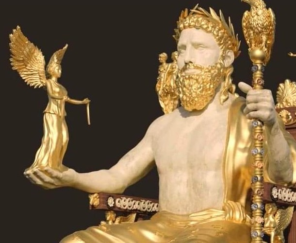
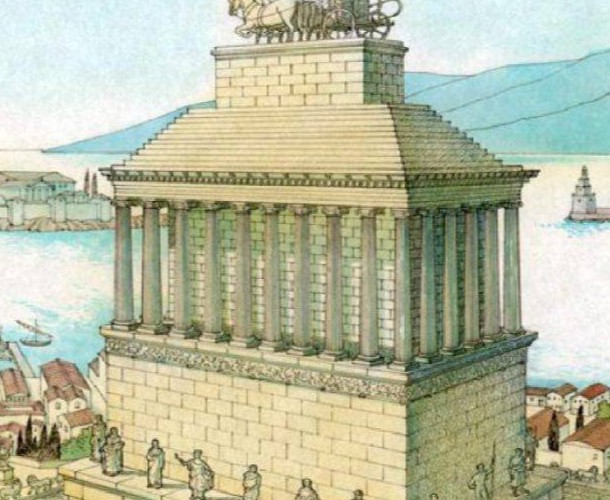
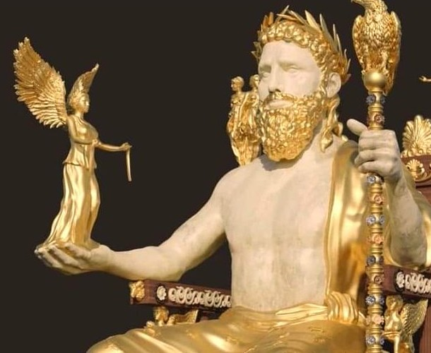
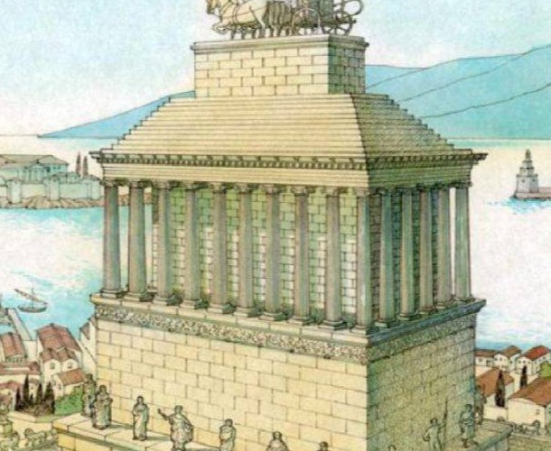
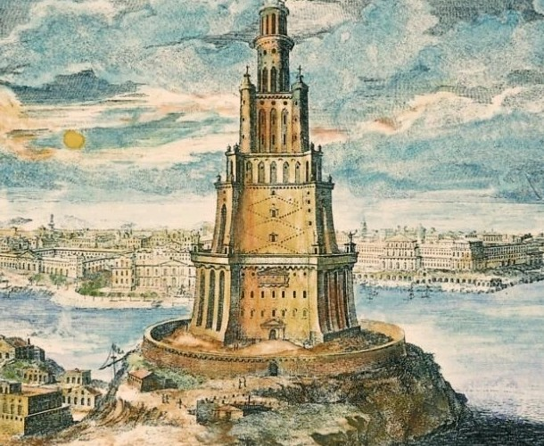
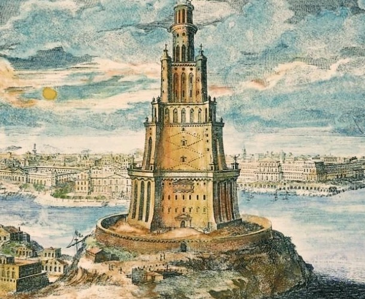

| Piramida Cheopsa |
2575 p.n.e. |
Egipcjanie |
nadal istnieje |
Chociaż niezniszczona, to w zmienionej formie: w średniowieczu pozbawiono ją licówki, a już w starożytności zrabowano skarby. |
| Wiszące ogrody Semiramidy |
600 p.n.e. |
Babilończycy |
I wiek p.n.e. |
trzęsienie ziemi |
| Świątynia Artemidy w Efezie |
560 p.n.e. |
Grecy, Lidyjczycy |
III wiek n.e. |
wersja pierwotna spalona przez Herostratesa, a jej rekonstrukcja zniszczona przez najazd Gotów. |
| Posąg Zeusa w Olimpii |
435-430 p.n.e. |
Grecy |
V-VI wiek n.e. |
pożar |
| Mauzoleum w Halikarnasie |
353 p.n.e. |
Grecy, Karowie |
1494 n.e. |
trzęsienie ziemi |
| Kolos Rodyjski |
281 p.n.e. |
Grecy |
224 p.n.e. |
trzęsienie ziemi |
| Latarnia morska na Faros |
280-279 p.n.e. |
Ptolemeusze, Grecy |
1303-1480 n.e. |
trzęsienie ziemi |
 



 
